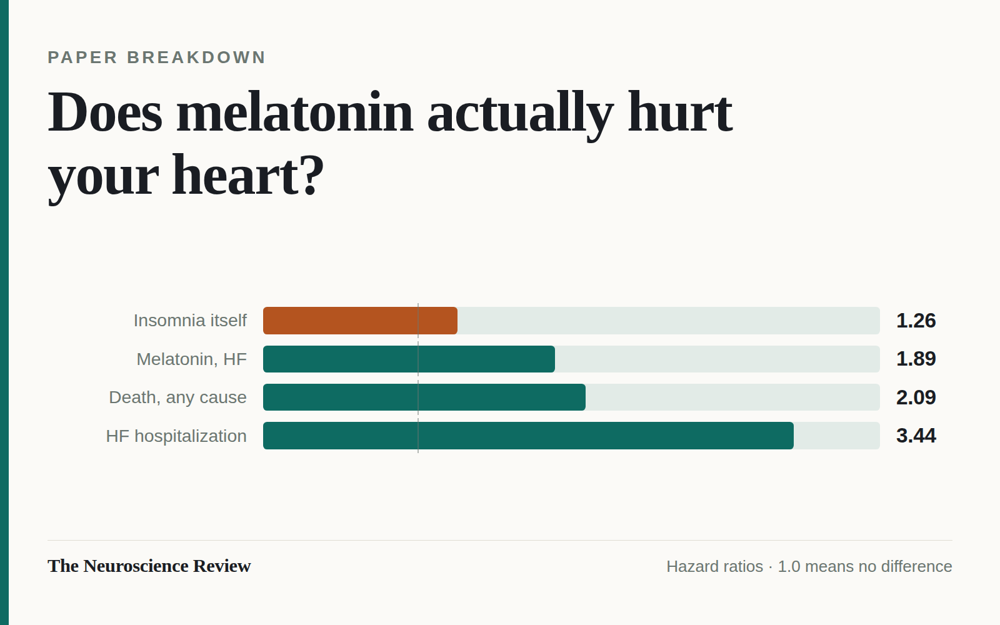
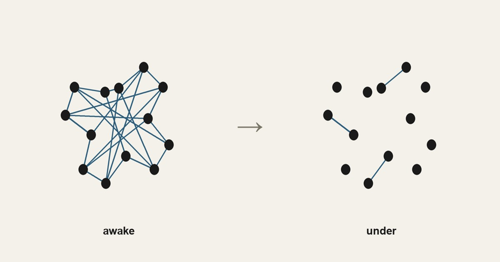
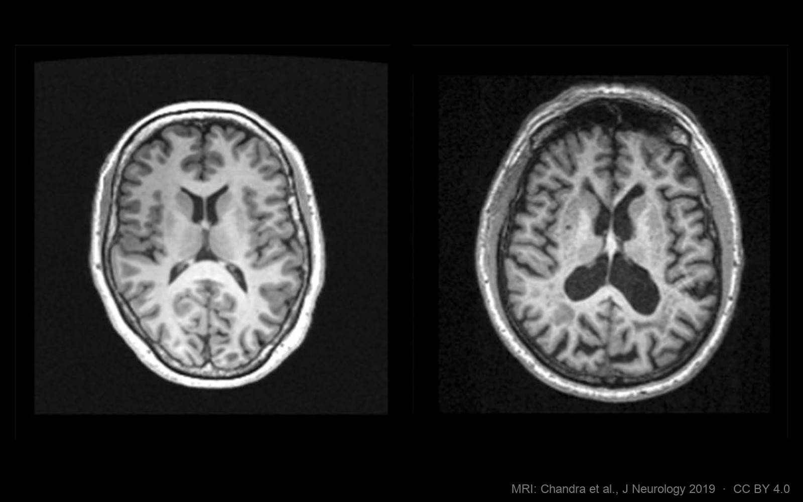
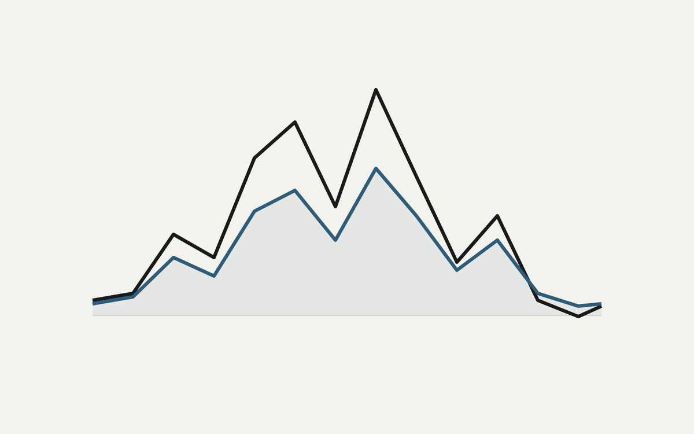
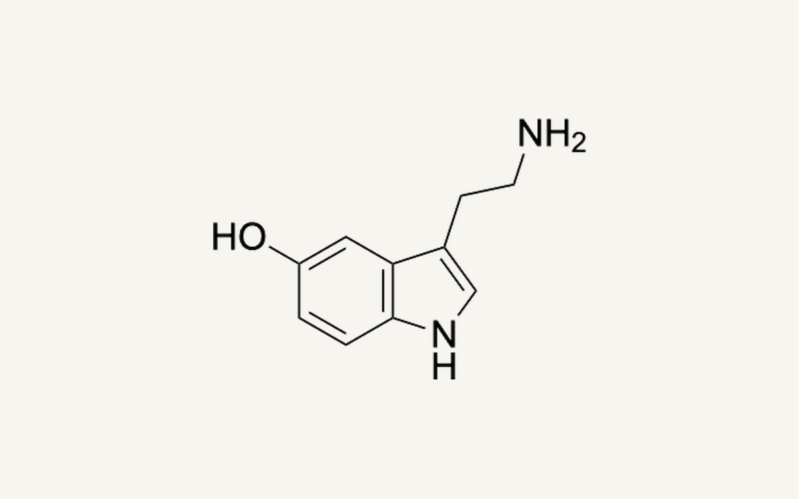
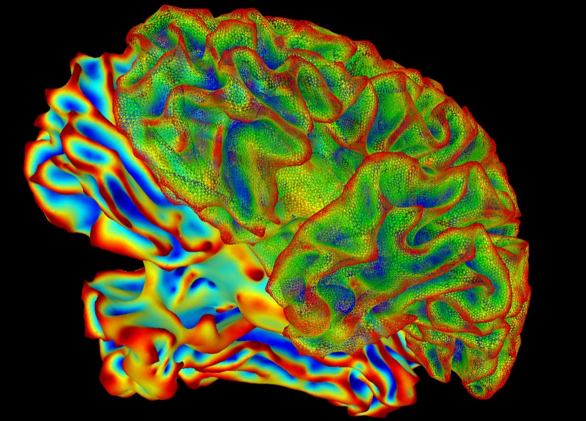
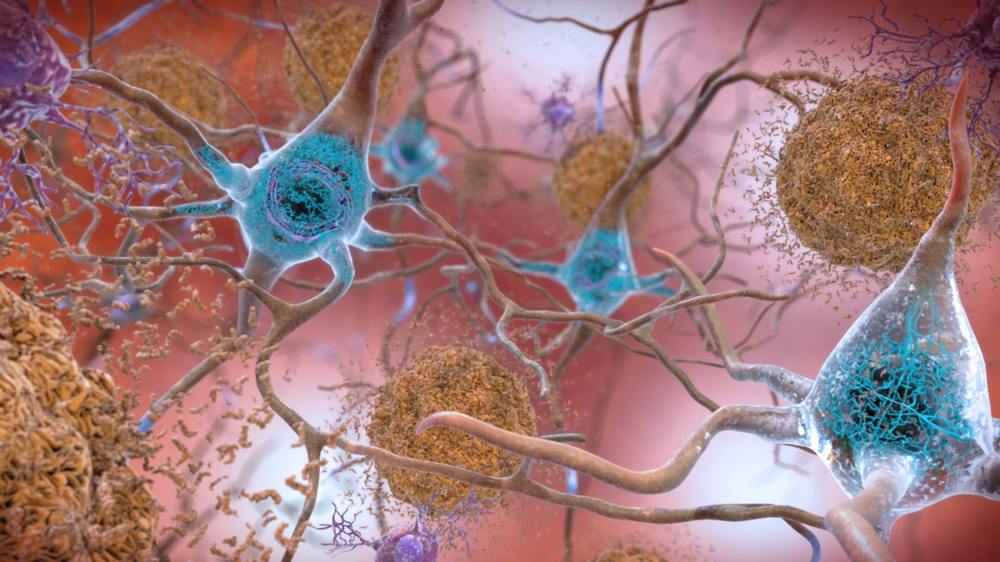
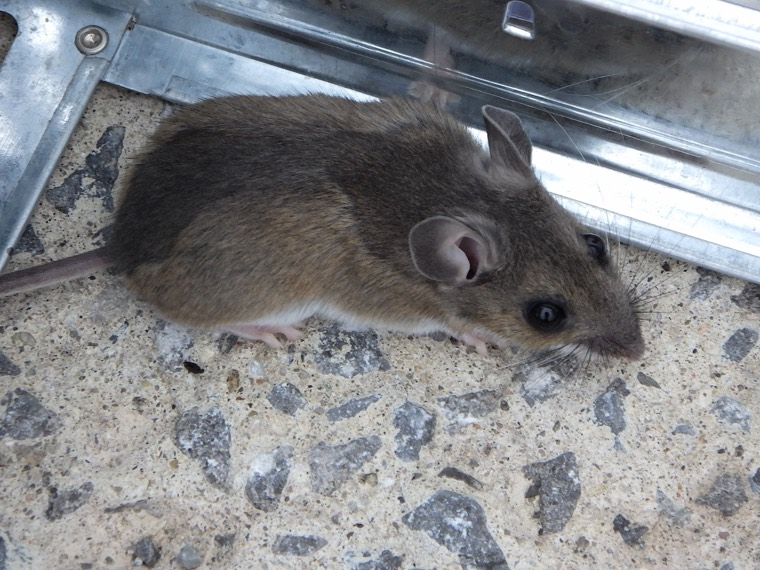
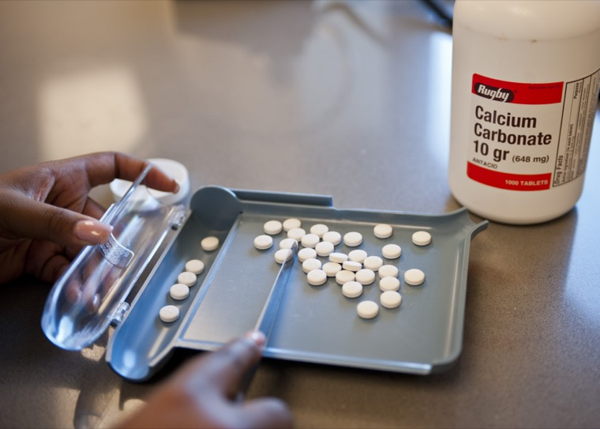

Articles
The archive.
Deep dives and paper breakdowns, newest first.
Deep dives and paper breakdowns, newest first.

A study linking long-term melatonin use to a 90 percent higher rate of heart failure went around the internet twice. It has still never been peer-reviewed, and one of its own numbers points at a simpler explanation.

Anesthesia does not switch your brain off, it dissolves the conversation between its parts, and you can watch consciousness leave on a monitor. What actually happens when you go under.

A 26-year study found that reaching midlife without high blood pressure, diabetes, or smoking was linked to 12.6 more dementia-free years. The biology of why, and what actually helps.
They’re sold as shortcuts to muscle, healing, weight loss, even a sharper brain. Here’s the honest map of what works, what doesn’t, and where the real risks are.

A brain implant caught sentences a person only imagined. The same study shows how limited, and how careful, that reading has to be.

The same pill is a first choice for depression and for panic, social anxiety, and OCD. That one fact strains the chemical imbalance story and points at how antidepressants really work.

A young owl in goggles that shift its whole world sideways, and the map of sound in its brain quietly sliding over to match. One of the clearest demonstrations that experience wires the brain.

It's one of the most popular myths about the brain. Here's why it's wrong, where it came from, and the stranger truth it was clumsily pointing at.

A landmark 2023 trial cleared amyloid plaque from people's brains with donanemab and slowed their decline. Here's what that really bought, and what it cost.

A 2011 study switched on a pinhead of neurons in the mouse hypothalamus and a calm male attacked almost anything. Here's how aggression got a physical address in the brain.
You spend a third of your life unconscious and you can't skip it. For something that costly, sleep must be doing real work. Here's what the research says it's for.

You can swallow a pill and it reaches your whole body, but most drugs never reach your brain. The blood-brain barrier is why, and it's the hardest problem in brain medicine.

When a headline says a brain region lit up, what was actually measured? Not thoughts, and not even electricity. Blood, indirectly, and a few seconds late.

A memory isn't a recording filed away in a drawer. It's a physical change in your neurons, and your brain rebuilds it every time you remember.

Most people learned in school that a neuron is "a brain cell that sends signals." That's about as useful as describing a phone as "a thing that sends signals." Let's build it from scratch.

Dopamine isn't really the "pleasure chemical." It's something stranger and more interesting, and the popular misuse of the word has consequences.
Real research, written to be read. No hype, no fluff, unsubscribe anytime.
We use your email only to send the newsletter (via Buttondown) and never share it. Privacy.